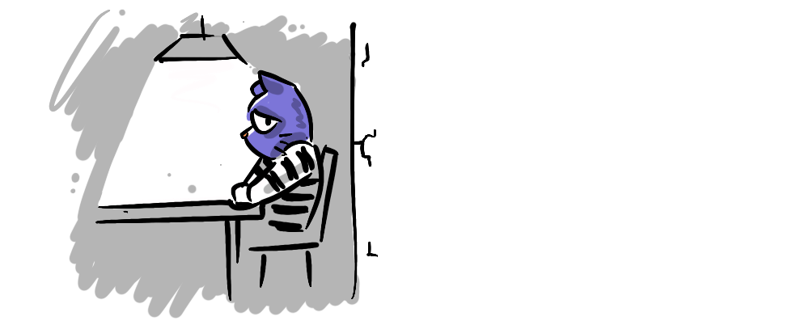
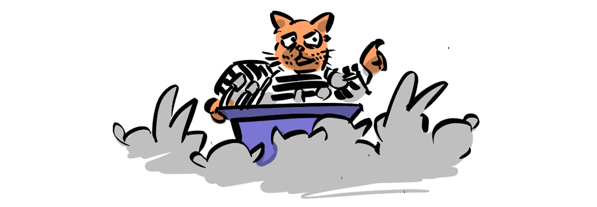

The Prisoner's Dilemma is the go-to example for game theory noobs and experts alike. It's a non-zero-sum game that introduces payoff matrices, it has a Nash Equilibrium that is not also Pareto Efficient (helping to distinguish between the two) and when taken further, we discover that strategies change with iterated games. It's got it all! Or does it? This post explains the Prisoner's Dilemma and details its benefits while the following series will question whether or not it's really the best advocate for game theory in the real world.

You have just robbed a bank. You've cracked the safe, packed the money bags, jumped in your getaway car with your partner, and sped off down the highway, only to find yourself tailed by the cops. As you weave through dark back streets, you hurl the money bags out the window to avoid being caught with the evidence. But alas, eventually you reach a police cordon and screech to a halt. The jig is up—you and your accomplice are arrested and taken in for questioning.
The Prisoner's Dilemma involves the separate interrogations of you and your partner. The cops don't have enough evidence to put you away for robbery. If you and your partner are loyal to each other (by staying silent), the cops can only get you on the stolen car, which is 1 year. So they are trying to get you to rat out your partner, by offering leniency—if you rat out your partner you'll get no jail time, and your partner will get 5 years.
This is already a dilemma, because if you have any loyalty to your partner, getting 2 years between you is better than one of you getting 5 years! On the other hand, you have the chance to avoid jail altogether. But it gets more complicated, because this deal is not only being offered to you, but to your partner too... meaning that if you cooperate and they rat you out you'll get 5 years and they'll get off scot-free. If you both betray each other, then you both get convicted, but also both get leniency—2 years each.
We represent this in Game Theory by using a payoff matrix.
You have two choices: cooperate and get 1 year if your partner also cooperates or 5 years if they don't, or defect and get 0 years if your partner cooperates, or 2 years if they don't. In terms of pure self-interest, you will always be better off defecting—0 is better than 1 year, 2 is better than 5 years, and this is amplified by the fact that the same is true for your partner (making the possibility of them defecting and you getting 5 years a very real one). In Game Theory this is called a Nash Equilibrium.
NASH EQUILIBRIUM
When no player can improve their position by unilaterally changing their strategy.
The Nash Equilibrium for the Prisoner's Dilemma is mutual defection, because there is no situation where diverging from this path benefits the player. But, if the answer is so clear, why is it a dilemma? And why does it feel so wrong???
Well, that's because, although the dominant strategy is clear, the result is sub-optimal: if both parties defect, they get a worse payoff (2,2) than if they had both cooperated (1,1). In Game Theory terms, the Nash Equilibrium is not Pareto Efficient.
PARETO EFFICIENCY
When there is no way to make any one player better off without making at least one player worse off.
Thus, the Pareto Efficient solution for the Prisoner's Dilemma is mutual cooperation. The "dilemma" in the Prisoner’s Dilemma arises from the conflict between the Nash Equilibrium, driven by self-interest, and the Pareto Efficient outcome, which benefits both players.
Is there a solution? In the next part we will explore how the Prisoner's Dilemma applies (or fails to apply) in the real world and see how iterated games change the dominant strategy, better reflecting our moral intuitions. We'll look at the limitations of contained one-shot games, and the idea of "rational" actors, and ask "Is the Prisoner's Dilemma ultimately a force for good in the world, or could the field of Game Theory find another poster-child?".
This series of posts will look at candidates that better reflect, and are more positively applicable to, the real world.